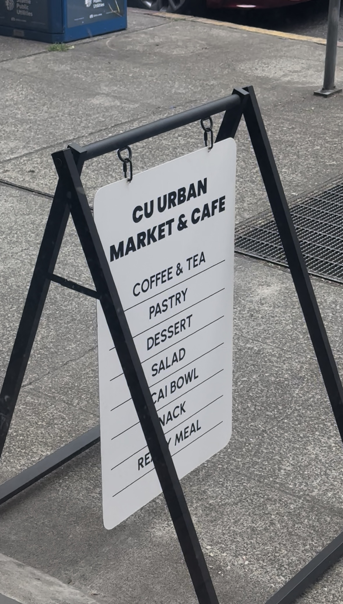
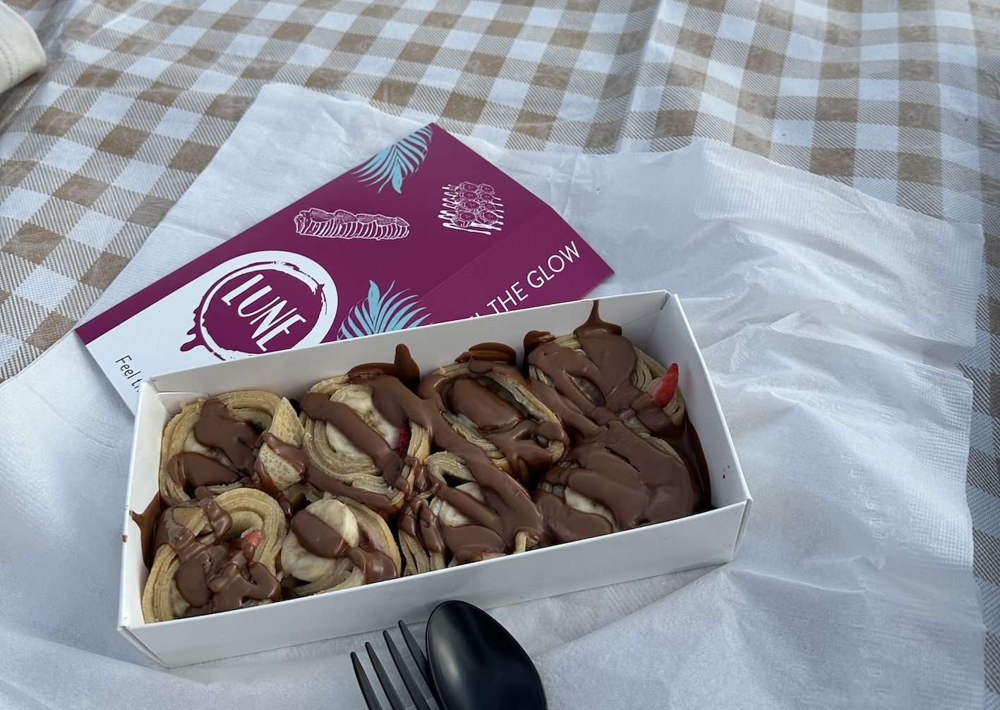
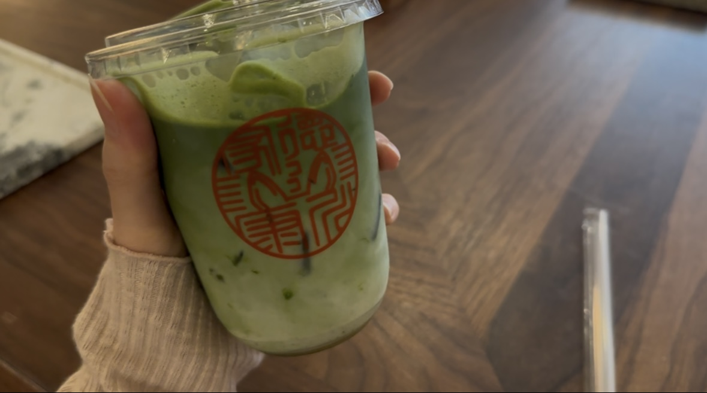

The original Starbucks is one of the most popular places to visit in Seattle. Recently renovated to give visitors an even better
experience, it allows you to enjoy special drinks available only at this location and purchase merchandise. Since it is located near Pike Place
Market, it is also very easy to visit while exploring the area. It is definitely one of the must-visit spots in Seattle, so don’t forget
to take a photo with your drink!
Pagasus Coffee
Pegasus Coffee is a cozy cafe known for its charming exterior covered with ivy. After taking a ferry from Seattle for about 30-40 minutes, you
can find Pegasus Coffee located on Bainbridge Island. Even without a car, the cafe is easy to visit by using public transportation and walking.
Many visitors enjoy relaxing here with coffee and pastries while taking a break from the busy city. Taking a ferry, visiting a beautiful
cafe, and enjoying nature altogether could make the perfect day trip or weekend plan!
CU urban market & cafe

CU offers a wide variety of drinks, including coffee, cream coffee, non-coffee drinks, and smoothies. The cafe also has shelves with
ready-to-eat foods and pastries, making it a great place for a quick meal or snack.
I personally really enjoy the smoothies here, and I would say that it was one of the best smoothies I have had in Seattle:)
Lune Cafe

If you enjoy crepes, you may have already heard of Lune Cafe ! The cafe has two locations in Seattle and offers sandwiches, toast, drinks,
and desserts. However, I would especially recommend trying their signature crepes. They come in many different flavors and creative styles, and
the crepe shown in the photo is called “Sushi.”
Isn’t that a funny and unique name?
Taz matcha Bar

I found this cafe by chance after noticing a large crowd gathered while walking by. If you enjoy matcha, I would highly recommend visiting this
place!
The cafe has bar-style seating where visitors can watch the matcha being prepared right in front of them, making the experience enjoyable
to watch as well.
There is also a sweetener option, and you can adjust the sweetness level to your preference, but if you want to experience the rich and
authentic flavor of matcha, I would recommend trying the agave sweetener with the 50% sweetness level🍵